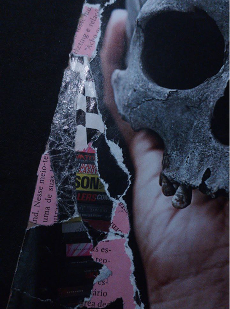
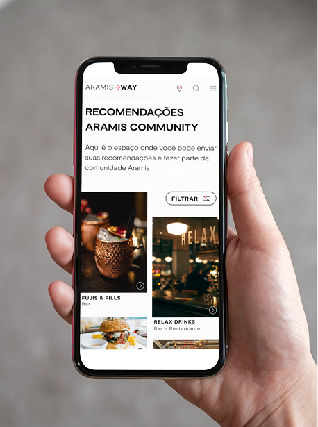

Sou UI e UX Designer, front-end, podcaster, criadora e divulgadora científica da Missão Exoplaneta e... faço uns zines

ver projeto
ver projetoAtuo desde a criação de um produto até seu lançamento, identificando problemas de usabilidade e encontrando soluções. Redesign estratégico também é comigo!
Divulgo astronomia no projeto Missão Exoplaneta, que conta com newsletter e podcast onde entrevisto cientistas BR.